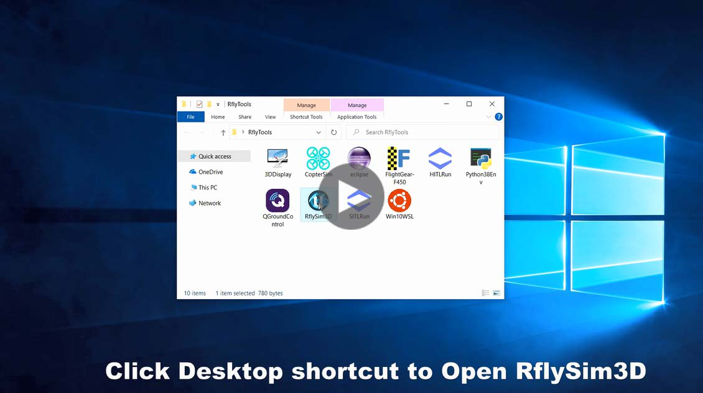
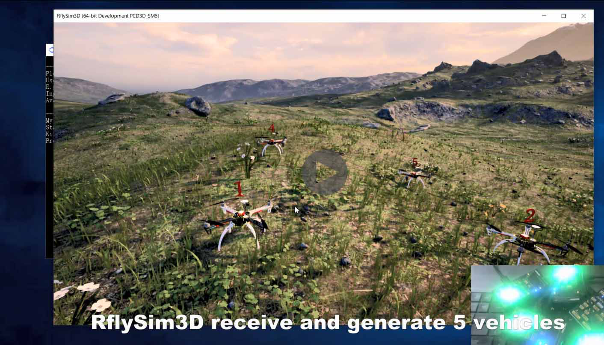
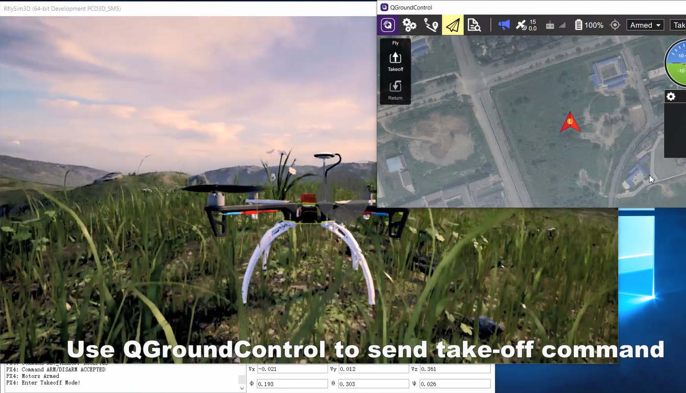

2. Basic Features¶
2.1. HIL Simulation for One Vehicle¶
You can open CopterSim and RflySm3D successively to start hardware-in-the-loop (HIL) simulation, or simple click the Desktop shortcut “HITLRun” and input the com number of the Pixhawk to start HIL simulation. The introduction of RflySim advanced platform and the method to start HIL simulation for one vehicle are presented in the following video:
RflySim: How to use hardware-in-the-loop simulation for one vehicle
2.2. HIL Simulation for Multiple Vehicles¶
You can also connect multiple Pixhawks to start HIL simulation for multiple vehicles, the procedure is presented in the following video:
RflySim Advance Function: How to use hardware-in-the-loop simulation for UAV swarm
2.3. SIL Simulation for One Vehicle¶
If you don’t have Pixhawk hardware, you can also run PX4 control software on Windows to form a software-in-the-loop simulation system with vehicle model in CopterSim through UDP network. The method to start a PX4&CopterSim SIL simulation for one vehicle is presented in the following video:
RflySim Advance Function: How to quickly perform software-in-the-loop simulation for one UAV